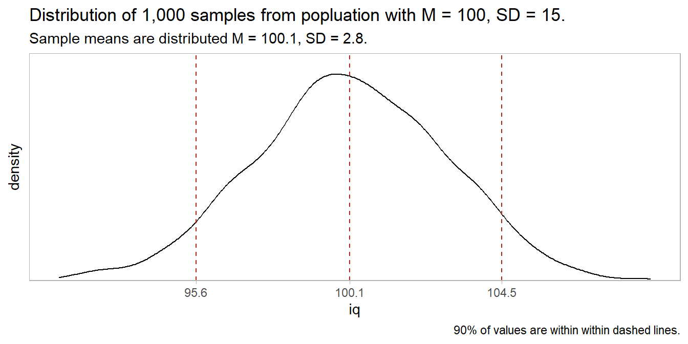
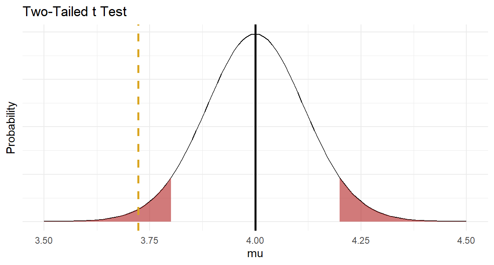
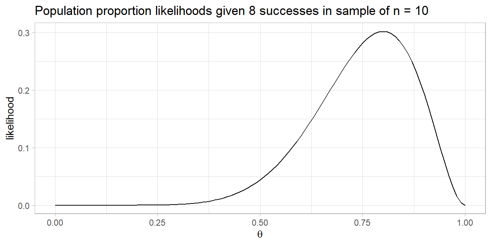

Chapter 2 Two-Group Comparison Tests
Use independent samples tests to either describe a variable’s frequency or central tendency difference between two independent groups, or to compare the difference to a hypothesized value.
If the data generating process produces continuous outcomes (interval or ratio) and the outcomes are symmetrically distributed, the difference in the sample means, \(\hat{d} = \bar{x} - \bar{y}\), is a random variable centered at the population difference, \(d = \mu_X - \mu_Y\). You can use a theoretical distribution (normal or student t) to estimate a 95% confidence interval (CI) around \(d\), or compare \(\hat{d}\) to an hypothesized population difference, \(d_0\). If you (somehow) know the sampling distribution variances \(\sigma^2_X\) and \(\sigma^2_Y\), or the Central Limit Theorem (CLT) conditions hold, you can assume the random variable is normally distributed and use the z-test, otherwise assume the random variable has a student t distribution and use the t-test.1 If the data generating process produces continuous outcomes that are not symmetrically distributed, use a non-parametric test like the Mann-Whitney U test.
If the data generating process produces discrete outcomes (counts), the sample count, \(x\), is a random variable from a Poisson, binomial, normal, or multinomial distribution, or a random variable from a theoretical outcome. For two independent samples, the data can be organized into a two-way table - a frequency table for two categorical variables. If you have a single categorical predictor variable, you can test whether the joint frequency counts differ from the expected frequency counts in the saturated model. You analyze a two-way table one of two ways.
If you only care about comparing two levels (like when the response variable is binary), conduct a proportion difference z-test or a Fisher exact-test.
If you want to compare the joint frequency counts to expected frequency counts under the independence model (the model of independent explanatory variables), conduct a Pearson’s chi-squared independence test, or a G-test.
2.1 Independent Samples
Independent Samples t-Test
If a population measure X is normally distributed with mean \(\mu_X\) and variance \(\sigma_X^2\), and population measure Y is normally distributed with mean \(\mu_Y\) and variance \(\sigma_Y^2\), then their difference is normally distributed with mean \(d = \mu_X - \mu_Y\) and variance \(\sigma_{XY}^2 = \sigma_X^2 + \sigma_Y^2\). By the CLT, as the sample sizes grow, non-normally distributed X and Y will approach normality, and so will their difference.
The independent samples t-test uses the difference in sample means \(\hat{d} = \bar{x} - \bar{y}\) as an estimate of \(d\) to evaluate an hypothesized difference, \(d_0\). The null hypothesis is \(d = d_0\). Alternatively, you can construct a \((1 - \alpha)\%\) confidence interval around \(\hat{d}\) to estimate \(d\) within a margin of error, \(\epsilon\).
In principal, you can test the difference between independent means with either a z test or a t-test. Both require independent samples and approximately normal sampling distributions. The sampling distributions are normal if the underlying populations are normally distributed, or if the sample sizes are large (\(n_X\) and \(n_Y\) \(\ge\) 30). However, the z-test additionally requires known sampling distribution variances \(\sigma^2_X\) and \(\sigma^2_Y\). These variances are never known, so always use the t-test.
The z-test assumes \(d\) has a normal distribution centered at \(\hat{d} = d\) with standard error \(se = \sqrt{\frac{\sigma_X^2}{n_X} + \frac{\sigma_Y^2}{n_Y}}.\) Test \(H_0: d = d_0\) with test statistic \(Z = \frac{\hat{d} - d_0}{se}\) or define a \((1 - \alpha)\%\) confidence interval as \(d = \hat{d} \pm z_{(1 - \alpha {/} 2)} se\).
The t-test assumes \(d\) has a t distribution centered at \(\hat{d} = d\) with standard error \(se = \sqrt{\frac{s_X^2}{n_X} + \frac{s_Y^2}{n_Y}}.\) Test \(H_0: d = d_0\) with test statistic \(T = \frac{\hat{d} - d_0}{se}\), or define a \((1 - \alpha)\%\) confidence interval as \(d = \hat{d} \pm t_{(1 - \alpha / 2), (n_X + n_Y - 2)} se\).
However, there is an issue with the t test degrees of freedom. If the sample sizes are small, and the standard deviations from each population are similar (the ratios of \(s_X\) and \(s_Y\) are <2), you can pool the variances \(s_p^2 = \frac{(n_X - 1) s_X^2 + (n_Y-1) s_Y^2}{n_X + n_Y-2}\) so that \(se = s_p \sqrt{\frac{1}{n_X} + \frac{1}{n_Y}}\) and \(df = n_X + n_Y -2\). This is call the pooled variances t-test. Otherwise, \(se = \sqrt{\frac{s_X^2}{n_X} + \frac{s_Y^2}{n_Y}}\), but you must reduce the degrees of freedom using the Welch-Satterthwaite correction, \(df = \frac{\left(\frac{s_X^2}{n_X} + \frac{s_Y^2}{n_Y}\right)^2}{\frac{s_X^4}{n_X^2\left(N_X-1\right)} + \frac{s_Y^4}{n_Y^2\left(N_Y-1\right)}}.\) This is called the separate variance t-test, or Welch’s t-test.
Mann-Whitney U Test
The Mann-Whitney U test is a nonparametric alternative to the independent-samples t-test for cases in which the samples are non-normally distributed or are ordinal rather than continuous.
If the two distributions have a different shape, the Mann-Whitney U test determines whether there are differences in the distributions. It does this by ranking all the values and comparing the mean ranks between the two groups. From this you can decide whether the dependent variable differs (lt, gt, or ne) between the groups. If the two distributions are the same shape, the Mann-Whitney U test determine whether there are differences in the medians. This is a more specific description of the difference.
The test statistic is the minimum of \(U_1\) and \(U_2\) where \(U_1 = n_1 n_2 \frac{(n_1 (n_1 + 1))}{2} - R_1\) and \(U_2 = n_1 n_2 \frac{(n_2 (n_2 + 1))}{2} - R_2\) and \(R_1\) and \(R_2\) are the respective rank sums. \(U = 0\) if there is complete separation between the groups, and \(U = n_1 n_2\) if there is complete overlap, so you reject \(H_0\) of equal populations for small values of \(U\).
Example
A company shows an advertisement to \(n_M\) = 20 males and \(n_F\) = 20 females, then measures their engagement with a survey. Do the mean engagement scores differ between the groups?
Laerd has two data sets for this example. One meets the conditions for a t-test, and the other fails the normality test, forcing us to use Mann-Whitney.

The t-test data set has the following summary statistics.
(ind_num$t_gt <- ind_num$t_dat %>%
gtsummary::tbl_summary(by = c(gender),
statistic = list(all_continuous() ~ "{mean} ({sd})")))| Characteristic | Male, N = 201 | Female, N = 201 |
|---|---|---|
| engagement | 5.56 (0.29) | 5.30 (0.39) |
|
1
Statistics presented: Mean (SD)
|
||
There were 20 male and 20 female participants. Data are mean \(\pm\) standard deviation, unless otherwise stated. The advertisement was more engaging to male viewers, 5.56 (0.29), than female viewers, 5.30 (0.39).
The Mann-Whitney data set has the following summary statistics.
(ind_num$mw_gt <- ind_num$mw_dat %>%
gtsummary::tbl_summary(by = c(gender),
statistic = list(all_continuous() ~ "{mean} ({sd})")))| Characteristic | Male, N = 201 | Female, N = 201 |
|---|---|---|
| engagement | 5.56 (0.35) | 5.43 (0.53) |
|
1
Statistics presented: Mean (SD)
|
||
There were 20 male and 20 female participants. Data are mean \(\pm\) standard deviation, unless otherwise stated. The advertisement was more engaging to male viewers, 5.56 (0.35), than female viewers, 5.43 (0.53).
Conditions
The independent samples t test and Mann-Whitney U test apply when 1) the response variable is continuous, 2) the independent variable is binomial, and 3) the observations are independent. The decision between the t test and Mann-Whitney stems from two additional conditions related to the data distribution - if both conditions hold, use the t test; otherwise use Mann-Whitney.
- Outliers. There should be no outliers in either group. Outliers exert a large influence on the mean and standard deviation. Test with a box plot. If there are outliers, you might be able to drop them or transform the data.
- Normality. Values should be nearly normally distributed. The t-test is robust to normality, but this condition is important with small sample sizes. Test with Q-Q plots or the Shapiro-Wilk test for normality. If the data is very non-normal, you might be able to transform the data.
If the data passes the two conditions, use the t test, but now you need to check a third condition related to the variances to determine which flavor of the t test to use.
- Homogeneous Variances. Use pooled-variances if the variances are homogeneous; otherwise use the separate variances method. Test with Levene’s test of equality of variances.
If the data does not pass the two conditions, use Mann-Whitney, but now you need to check a third condition here as well. The condition does not affect how to perform the test, but rather how to interpret the results.
- Distribution shape. If the distributions have the same shape, interpret the Mann-Whitney result as a comparison of the medians; otherwise interpret the result as a comparison of the mean ranks.
Outliers
Assess outliers with a box plot. Box plot whiskers extend up to 1.5*IQR from the upper and lower hinges and outliers (beyond the whiskers) are are plotted individually.

For the t test data set,
There were no outliers in the data, as assessed by inspection of a boxplot.
and for the Mann-Whitney data set,
There was one outlier in the data, as assessed by inspection of a boxplot.
If the outliers are data entry errors or measurement errors, fix or discard them. If the outliers are genuine, you have a couple options before reverting to the Mann-Whitney U test.
- Leave it in if it doesn’t affect the conclusion (compared to taking it out).
- Transform the variable. Don’t do this unless the variable is also non-normal. Transformation also has the downside of making interpretation more difficult.
Normality
Assume the population is normally distributed if n \(\ge\) 30. Otherwise, assess a Q-Q plot, skewness and kurtosis values, or a histogram. If you still don’t feel confident about normality, run a Shapiro-Wilk test.
There are only \(n_M\) = 20 male and \(n_F\) = 20 female observations, so you need to test normality. The QQ plot indicates normality in the t-test data set, but not in the Mann-Whitney data set.
bind_rows(
`t-test` = ind_num$t_dat,
`Mann-Whitney` = ind_num$mw_dat,
.id = "set"
) %>%
ggplot(aes(sample = engagement, group = gender, color = fct_rev(gender))) +
stat_qq() +
stat_qq_line(col = "goldenrod") +
theme_minimal() + theme(legend.position = "top") +
facet_wrap(~fct_rev(set)) +
labs(title = "Normal Q-Q Plot", color = NULL)
Run Shapiro-Wilk separately for the males and for the females. Since we are looking at two data sets in tandem, there are four tests below. For the t-test data set,
(ind_num$t_shapiro <- split(ind_num$t_dat, ind_num$t_dat$gender) %>%
map(~shapiro.test(.$engagement))
)## $Male
##
## Shapiro-Wilk normality test
##
## data: .$engagement
## W = 0.98344, p-value = 0.9705
##
##
## $Female
##
## Shapiro-Wilk normality test
##
## data: .$engagement
## W = 0.96078, p-value = 0.5595Engagement scores for each level of gender were normally distributed, as assessed by Shapiro-Wilk’s test (p > .05).
For the Mann-Whitney data set,
(ind_num$mw_shapiro <- split(ind_num$mw_dat, ind_num$mw_dat$gender) %>%
map(~shapiro.test(.$engagement))
)## $Male
##
## Shapiro-Wilk normality test
##
## data: .$engagement
## W = 0.98807, p-value = 0.9946
##
##
## $Female
##
## Shapiro-Wilk normality test
##
## data: .$engagement
## W = 0.8354, p-value = 0.003064Engagement scores for each level of gender were not normally distributed for the Female sample, as assessed by Shapiro-Wilk’s test (p = 0.003).
If the data is not normally distributed, you still have a couple options before reverting to the Mann-Whitney U test.
- Transform the dependent variable.
- Carry on regardless - the independent samples t-test is fairly robust to deviations from normality.
Homogenous Variances
If the data passed the outliers and normality tests, you will use the t-test, so now you need to test the variances to see which version (pooled-variances method if variances are homogeneous; separate variances method otherwise). A rule of thumb is that homogeneous variances have a ratio of standard deviations between 0.5 and 2.0:
sd(ind_num$t_dat %>% filter(gender == "Male") %>% pull(engagement)) /
sd(ind_num$t_dat %>% filter(gender == "Female") %>% pull(engagement))## [1] 0.7419967You can also use the F test to compare the ratio of the sample variances \(\hat{r} = s_X^2 / s_Y^2\) to an hypothesized ratio of population variances \(r_0 = \sigma_X^2 / \sigma_Y^2 = 1.\)
var.test(ind_num$t_dat %>% filter(gender == "Female") %>% pull(engagement),
ind_num$t_dat %>% filter(gender == "Male") %>% pull(engagement))##
## F test to compare two variances
##
## data: ind_num$t_dat %>% filter(gender == "Female") %>% pull(engagement) and ind_num$t_dat %>% filter(gender == "Male") %>% pull(engagement)
## F = 1.8163, num df = 19, denom df = 19, p-value = 0.2025
## alternative hypothesis: true ratio of variances is not equal to 1
## 95 percent confidence interval:
## 0.7189277 4.5888826
## sample estimates:
## ratio of variances
## 1.816336Bartlett’s test is a second option.
##
## Bartlett test of homogeneity of variances
##
## data: ind_num$t_dat$engagement and ind_num$t_dat$gender
## Bartlett's K-squared = 1.6246, df = 1, p-value = 0.2024Levene’s test is a third option. Levene’s is less sensitive to departures from normality than Bartlett.
## Levene's Test for Homogeneity of Variance (center = "mean")
## Df F value Pr(>F)
## group 1 1.922 0.1737
## 38There was homogeneity of variances for engagement scores for males and females, as assessed by Levene’s test for equality of variances (p = 0.174).
Similar Distributions
If the data passed the outliers and normality tests, you use the Mann-Whitney test, so now you need to test the distributions to determine how you can interpret its results. If the distributions are similarly shaped, you can interpret the Mann-Whitney U test as inferences about differences in medians between the two groups. If the distributions look dissimilar, interpret the test as inferences about the distributions, lower/higher scores and/or mean ranks.

Distributions of the engagement scores for males and females were similar, as assessed by visual inspection.
Test
Conduct the t-test or the Mann-Whitney U test.
##
## Two Sample t-test
##
## data: engagement by gender
## t = 2.3645, df = 38, p-value = 0.02327
## alternative hypothesis: true difference in means is not equal to 0
## 95 percent confidence interval:
## 0.03725546 0.48074454
## sample estimates:
## mean in group Male mean in group Female
## 5.558875 5.299875There was a statistically significant difference in mean engagement score between males and females, with males scoring higher than females, 0.26 (95% CI, 0.04 to 0.48), t(38) = 2.365, p = 0.023.
The effect size, Cohen’s d, is defined as \(d = |M_D| / s\), where \(|M_D| = \bar{x} - \bar{y}\), and \(s\) is the pooled sample standard deviation, \(s_p = \sqrt{\frac{(n_X - 1) s_X^2 + (n_Y-1) s_Y^2}{n_X + n_Y-2}}\). \(d <.2\) is considered trivial, \(.2 \le d < .5\) small, and \(.5 \le d < .8\) large.
## Cohen's d | 95% CI
## ------------------------
## 0.75 | [0.10, 1.39]
## - Estimate using pooled SDYou are about to reject the null hypothesis. Construct a plot as a sanity check on your reasoning.

The Mann-Whitney U test is the same as the Wilcoxon test, but for two variables.
(ind_num$mw_test <- wilcox.test(engagement ~ gender,
data = ind_num$mw_dat,
exact = TRUE,
correct = FALSE))##
## Wilcoxon rank sum exact test
##
## data: engagement by gender
## W = 255, p-value = 0.1417
## alternative hypothesis: true location shift is not equal to 0Unfortunately, wilcox.test() does not report U or the standardized test statistic \(z = \frac{U - m_U}{\sigma_U}\) where \(m_U = \frac{n_1 n_2}{2}\) and \(\sigma_U = \sqrt{\frac{n_1 n_2(n_1 + n_2 + 1)}{12}}\), so you have to calculate that yourself.
ind_num$mw_test_manual <- ind_num$mw_dat %>%
mutate(R = rank(engagement)) %>%
group_by(gender) %>%
summarize(.groups = "drop", n = n(), R = sum(R)) %>%
pivot_wider(names_from = gender, values_from = c(n, R)) %>%
mutate(
U_Male = n_Male * n_Female + n_Male*(n_Male + 1)/2 - R_Male,
U_Female = n_Male * n_Female + n_Female*(n_Female + 1)/2 - R_Female,
U = min(U_Male, U_Female),
m_U = n_Male * n_Female / 2,
s_U = sqrt((n_Male * n_Female * (n_Male + n_Female + 1)) / 12),
z = (U - m_U) / s_U,
mean_rank_Male = R_Male / n_Male,
mean_rank_Female = R_Female / n_Female,
)
ind_num$mw_test_manual %>% flextable::flextable() %>% flextable::autofit()n_Male | n_Female | R_Male | R_Female | U_Male | U_Female | U | m_U | s_U | z | mean_rank_Male | mean_rank_Female |
20 | 20 | 465 | 355 | 145 | 255 | 145 | 200 | 36.96846 | -1.487755 | 23.25 | 17.75 |
Median engagement score was not statistically significantly different between males and females, U = 145, z = -1.488, p = 0.142, using an exact sampling distribution for U.
Now you are ready to report the results. Here is how you would report the t test.
Data are mean \(\pm\) standard deviation, unless otherwise stated. There were 20 male and 20 female participants. An independent-samples t-test was run to determine if there were differences in engagement to an advertisement between males and females. There were no outliers in the data, as assessed by inspection of a boxplot. Engagement scores for each level of gender were normally distributed, as assessed by Shapiro-Wilk’s test (p > .05), and there was homogeneity of variances, as assessed by Levene’s test for equality of variances (p = 0.174). The advertisement was more engaging to male viewers (5.56 \(\pm\) = 0.29) than female viewers (5.30 \(\pm\) = 0.39), a statistically significant difference of 0.26 (95% CI, 0.04 to 0.48), t(38) = 2.365, p = 0.023, d = 0.75.
Here is how you would report the Mann-Whitney U-Test.
A Mann-Whitney U test was run to determine if there were differences in engagement score between males and females. Distributions of the engagement scores for males and females were similar, as assessed by visual inspection. Median engagement score for males (5.58) and females (5.38) was not statistically significantly different, U = 145, z = -1.488, p = 0.142, using an exact sampling distribution for U.
Had the distributions differed, you would report the Mann-Whitney like this:
A Mann-Whitney U test was run to determine if there were differences in engagement score between males and females. Distributions of the engagement scores for males and females were not similar, as assessed by visual inspection. Engagement scores for males (mean rank = 23.25) and females (mean rank = 17.75) were not statistically significantly different, U = 145, z = -1.488, p = 0.142, using an exact sampling distribution for U.
2.2 Paired Samples
There are two common study designs that employ a paired samples t-test to compare two related groups. One relates the groups as two time points for the same subjects. The second relates the groups as two tests of the same subjects, e.g. comparing reaction time under two lighting conditions.
Paired Samples t-Test
The paired samples t-test uses the mean of sampled paired differences \(\bar{d}\) as an estimate of the mean of the population paired differences \(\delta\) to evaluate an hypothesized mean \(\delta_0\). Test \(H_0: \delta = \delta_0\) with test statistic \(T = \frac{\bar{d} - \delta_0}{se}\), or define a \((1 - \alpha)\%\) confidence interval as \(\delta = \bar{d} \pm t_{1 - \alpha / 2, n - 1} se\). The paired t-test is really just a one-sample mean t-test operating on variable that is defined as the difference between two variables.
The paired samples t test applies when the sampling distribution of the mean of the population paired differences is normally distributed and there are no significant outliers.
Wilcoxon signed-rank Test
The Wilcoxon signed-rank test is a nonparametric alternative to the paired-samples t-test for cases in which the paired differences fails the normality condition, but is at least symmetrically distributed.
The test statistic is the sum product of the difference signs (-1, +1) and the rank of the difference absolute values, \(W = \sum_{i=1}^n sign (d_i) \cdot R_i\). The more differences that are of one sign, or of extreme magnitude, the larger \(W\) is likely to be, and the more likely to reject \(H_0\) of equality of medians.
Sign Test
The sign test is an alternative to the Wilcoxon signed-rank test for cases in which the paired differences fails the symmetrical distribution condition.
The test statistic is the count of pairs whose difference is positive, \(W = cnt(d_i > 0)\). \(W \sim b(n, 0.5)\), so the sign test is really just an exact binomial test (exact sign test), or for large n-size, the normal approximation to the binomial (sign test).
Example
\(n\) = 20 athletes consume a carb-only or carb+protein drink prior to running as far as possible in 2 hours and a researcher records their distances under each condition. Do the distances differ from 0?
Laerd has three data sets for this example. One meets the conditions for a t-test. The second fails the normality condition, but is symmetric and meets the conditions for the Wilcoxon test. The third fails the symmetry condition and requires the sign test.
t-test data set
(drink$t_gt <- drink$t_dat %>%
gtsummary::tbl_summary(statistic = list(all_continuous() ~ "{mean} ({sd})"))
)| Characteristic | N = 201 |
|---|---|
| carb | 11.17 (0.73) |
| carb_protein | 11.30 (0.71) |
| diff | 0.14 (0.10) |
|
1
Statistics presented: Mean (SD)
|
|
There were 20 participants. Data are mean \(\pm\) standard deviation, unless otherwise stated. Participants ran further after consuming the carbohydrate-protein drink, 11.30 (0.71) km, than the carbohydrate-only drink, 11.17 (0.73) km.
Wilcoxon data set
Once you learn you need Wilcoxon or the sign-test, show the median and IQR summary statistics instead.
| Characteristic | N = 201 |
|---|---|
| carb | 11.28 (10.43, 11.72) |
| carb_protein | 11.37 (10.92, 11.81) |
| diff | 0.19 (-0.10, 0.47) |
|
1
Statistics presented: Median (IQR)
|
|
There were 20 participants. Data are medians and IQR unless otherwise stated. Participants ran further after consuming the carbohydrate-protein drink, 11.37 (10.92, 11.81) km, than the carbohydrate-only drink, 11.28 (10.43, 11.72) km.
Sign data set
| Characteristic | N = 201 |
|---|---|
| carb | 11.11 (10.43, 11.49) |
| carb_protein | 11.37 (10.92, 11.81) |
| diff | 0.23 (0.12, 0.55) |
|
1
Statistics presented: Median (IQR)
|
|
There were 20 participants. Data are median and IQR unless otherwise stated. Participants ran further after consuming the carbohydrate-protein drink, 11.37 (10.92, 11.81) km, than the carbohydrate-only drink, 11.11 (10.43, 11.49) km.
Conditions
The paired samples t test applies when the variable is continuous and partitioned into dependent pairs, Additionally, there are two conditions related to the data distribution. If either condition fails, consider the suggested work-around or move to the non-parametric alternatives.
- Outliers. There should be no outliers in the differences because they exert a large influence on the mean and standard deviation. Test with a box plot. If there are outliers, you might be able to drop them if they do not affect the conclusion, or you can transform the data.
- Normality. Differences should be nearly normally distributed (“nearly” because the t-test is robust to the normality assumption). This condition is especially important with small sample sizes. Test with Q-Q plots or the Shapiro-Wilk test for normality. If the data is very non-normal, you might be able to transform the data.
Outliers
Assess outliers with a box plot. Box plot whiskers extend up to 1.5*IQR from the upper and lower hinges and outliers (beyond the whiskers) are are plotted individually.

There were no outliers in the data, as assessed by inspection of a boxplot.
Had there been outliers, you might report
X outliers were detected. Inspection of their values did not reveal them to be extreme and they were kept in the analysis.
If the outliers are data entry errors or measurement errors, fix them or discard them. If the outliers are genuine, you can try leaving them in or transforming the data.
Normality
Assume the population is normally distributed if n \(\ge\) 30. These data sets have n = 20 observations, so you cannot assume normality. Asses a Q-Q plot, skewness and kurtosis values, histogram, or Shapiro-Wilk test.

For the t-test data set,
##
## Shapiro-Wilk normality test
##
## data: drink$t_dat$diff
## W = 0.97119, p-value = 0.7797The differences between the distance ran in the carbohydrate-only and carbohydrate-protein trial were normally distributed, as assessed by Shapiro-Wilk’s test (p = 0.780).
For the Wilcoxon data set,
##
## Shapiro-Wilk normality test
##
## data: drink$wilcoxon_dat$diff
## W = 0.87077, p-value = 0.01212The differences between the distance ran in the carbohydrate-only and carbohydrate-protein trial were not normally distributed, as assessed by Shapiro-Wilk’s test (p = 0.012).
For the sign-test data set,
##
## Shapiro-Wilk normality test
##
## data: drink$sign_dat$diff
## W = 0.8968, p-value = 0.03593The differences between the distance ran in the carbohydrate-only and carbohydrate-protein trial were not normally distributed, as assessed by Shapiro-Wilk’s test (p = 0.036).
If the data is normally distributed, use the t-test. If not, you try transforming the dependent variable, or carrying on regardless since the t-test is fairly robust to deviations from normality.
Symmetric Distribution
If the data passed the outliers test, but failed the normality test, as the Wilcoxon and sign test data sets above did, you will use the Wilcoxon signed-rank test or sign test. Now you need to test the distribution to determine which test. If the distribution is symmetric, use Wilcoxon; otherwise use the sign test.

For the Wilcoxon data set,
The distribution of the differences between the carbohydrate-protein drink and the carbohydrate-only was symmetric, as assessed by visual inspection.
For the sign data set,
The distribution of the differences between the carbohydrate-protein drink and the carbohydrate-only was not asymmetric, as assessed by visual inspection.
Test
t-test
##
## Paired t-test
##
## data: drink$t_dat$carb_protein and drink$t_dat$carb
## t = 6.3524, df = 19, p-value = 4.283e-06
## alternative hypothesis: true difference in means is not equal to 0
## 95 percent confidence interval:
## 0.09085492 0.18014508
## sample estimates:
## mean of the differences
## 0.1355The carbohydrate-protein drink elicited an increase of 0.135 (95% CI, 0.091 to 0.180) km in the distance run in two hours compared to a carbohydrate-only drink.
The effect size, called Cohen’s d, is the number of standard deviations the measured mean difference is from the hypothesized difference, \((\bar{d}-d_0) / s\), where \(s\) is the sample standard deviation. .2 is small, .5 is medium, and .8 is large. This one is large.
## Cohen's d | 95% CI
## ------------------------
## 1.42 | [0.80, 2.09]
## - Estimate using pooled SDYou are about to reject the null hypothesis. Construct a plot as a sanity check on your reasoning.

Report the results.
A paired-samples t-test was used to determine the effect of a new formula of sports drink on running performance. Instead of the regular, carbohydrate-only drink, the new sports drink contains a new carbohydrate-protein mixture. Twenty participants were recruited to the study who each performed two trials in which they had to run as far as possible in two hours on a treadmill. In one of the trials they drank the carbohydrate-only drink and in the other trial they drank the carbohydrate-protein drink. The order of the trials was counterbalanced and the distance they ran in both trials was recorded.
Two outliers were detected that were more than 1.5 box-lengths from the edge of the box in a boxplot. Inspection of their values did not reveal them to be extreme and they were kept in the analysis. The assumption of normality was not violated, as assessed by Shapiro-Wilk’s test (p = 0.780).
Data are mean \(\pm\) standard deviation, unless otherwise stated. Participants ran further after consuming the carbohydrate-protein drink, 11.30 (0.71) km, than the carbohydrate-only drink, 11.17 (0.73) km, a statistically significant increase of 0.135 (95% CI, 0.091 to 0.180) km, t(19) = 6.352, p = 0.0000, d = 1.42.
Wilcoxon Signed-Rank Test
From the distribution plot, you can see that most of the signs were positive, and the largest absolute difference values were among the positives, so expect a pretty large test statistic.
(drink$wilcoxon_test <- wilcox.test(drink$wilcoxon_dat$carb_protein,
drink$wilcoxon_dat$carb,
paired = TRUE))##
## Wilcoxon signed rank exact test
##
## data: drink$wilcoxon_dat$carb_protein and drink$wilcoxon_dat$carb
## V = 162, p-value = 0.03277
## alternative hypothesis: true location shift is not equal to 0The carbohydrate-protein drink elicited a statistically significant median increase in distance run in two hours compared to the carbohydrate-only drink, W = 162, p = 0.033.
Report the results.
A Wilcoxon signed-rank test was conducted to determine the effect of a new formula of sports drink on running performance. Instead of the regular, carbohydrate-only drink, the new sports drink contains a new carbohydrate-protein mixture. Twenty participants were recruited to the study who each performed two trials in which they had to run as far as possible in two hours on a treadmill. In one of the trials they drank the carbohydrate-only drink and in the other trial they drank the carbohydrate-protein drink. The order of the trials was counterbalanced and the distance they ran in both trials was recorded.
The difference scores were approximately symmetrically distributed, as assessed by a histogram with superimposed normal curve.
Data are medians unless otherwise stated. Of the 20 participants recruited to the study, the carbohydrate-protein drink elicited an increase in the distance run in 17 participants compared to the carbohydrate-only drink, whereas two participants saw no improvement and one participant did not run as far with the carbohydrate-protein drink. There was a statistically significant median increase in distance run (0.2300 km) when subjects imbibed the carbohydrate-protein drink (11.368 km) compared to the carbohydrate-only drink (11.108 km), W = 162, p = 0.0328.
Sign Signed-Rank Test
Conduct the exact sign test since the n-size is not so large that we need the normal approximation to the binomial. Notice n is the count of non-zero differences.
##
## Exact binomial test
##
## data: sum(drink$sign_dat$diff > 0) and sum(drink$sign_dat$diff != 0)
## number of successes = 18, number of trials = 18, p-value = 7.629e-06
## alternative hypothesis: true probability of success is not equal to 0.5
## 95 percent confidence interval:
## 0.814698 1.000000
## sample estimates:
## probability of success
## 1The carbohydrate-protein drink elicited a statistically significant median increase in distance run (0.230 km) compared to the carbohydrate-only drink, p = 0.000.
Report the results.
An exact sign test was conducted to determine the effect of a new formula of sports drink on running performance. Instead of the regular, carbohydrate-only drink, the new sports drink contains a new carbohydrate-protein mixture. Twenty participants were recruited to the study who each performed two trials in which they had to run as far as possible in two hours on a treadmill. In one of the trials they drank the carbohydrate-only drink and in the other trial they drank the carbohydrate-protein drink. The order of the trials was counterbalanced and the distance they ran in both trials was recorded.
An exact sign test was used to determine whether there was a statistically significant median difference between the distance ran when participants drank a carbohydrate-protein drink compared to a carbohydrate-only drink. Data are medians unless otherwise stated. Of the 20 participants recruited to the study, the carbohydrate-protein drink elicited an increase in the distance run in 18 participants compared to the carbohydrate-only drink, whereas 0 participants did not run as far and 2 participant saw no improvement with the carbohydrate-protein drink. There was a statistically significant median increase in distance run (0.2300 km) when subjects imbibed the carbohydrate-protein drink (11.368 km) compared to the carbohydrate-only drink (11.108 km), p = 0.0000.
2.3 Pearson’s Correlation for Numeric Vars
2.4 Spearman’s Ranked Correlation for Numeric Vars
2.5 2 Sample Independent t-test for Categorical Vars
This test applies when you know the population variance.
2.6 2 Sample Welch’s t-test for Categorical Vars
This test applies when the variable variances are unequal.
2.7 Paired Sample t-test for Categorical Vars
This test applies when you have paired samples.
2.8 Mann-Whitney U Test for Categorical Vars
This test applies when the variable distributions are non-normally.
2.9 Wilcoxon Paired-Sample Test for Categorical Vars
This test applies when the variable distributions are non-normally distributed and samples are paired.
2.10 Pearson’s Correlation for Categorical Vars
2.11 Spearman’s Ranked Correlation for Categorical Vars
2.12 Fisher’s Exact-test
Use Fisher’s Exact-test to test whether the observed frequencies of a single discrete dichotomous variable are equal. Suppose you have a treatment and control, and a binary outcome with two levels, sick and cured. The
observed frequency counts, \(O_j\), of the \(J\) levels of a categorical variable differ from the expected frequency counts, \(E_j\). \(H_0\) is \(O_j = E_j\). The p-value from the test is computed as if the margins of the table are fixed. This leads under a null hypothesis of independence to a hypergeometric distribution of the numbers in the cells of the table
The test is applicable in situations where
- the row totals \(n_{i+}\) and the column totals \(n_+j\) are fixed by study design (rarely applies), and
- the expected values of >20% of cells (at least 1 cell in a 2x2 table) have expected cell counts >5, and no expected cell count is <1.
In practice, it appears that researchers use Fisher’s exact-test for 2x2 tables with small (n < 1,000) sample sizes. It is more accurate than the chi-square and G tests.
([Wikipedial(https://en.wikipedia.org/wiki/Fisher%27s_exact_test)). Fisher’s exact-test is useful for small n-size samples where the chi-squared distribution assumption of the chi-squared and G-test-tests fails. Fisher’s exact-test is overly conservative (p values too high) for large n-sizes.
The t-test returns nearly the same result as the z-test when the CLT holds, so in practice no one bothers with the z-test except as an aid to teach the t-test.↩︎